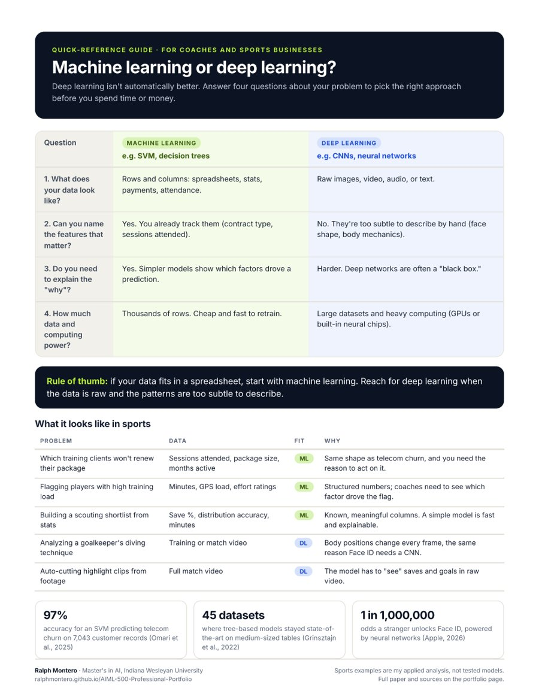

Deep learning gets the headlines. It isn't always the right tool.
Before this assignment, I used "machine learning" and "deep learning" interchangeably. A lot of coaches and business owners do too, and it's a costly mix-up. Pick the wrong approach and you can spend more money on a model that's slower to build and impossible to explain.
Deep learning is a part of machine learning. Traditional machine learning learns from features people choose, like contract type or monthly cost. Deep learning uses many-layered neural networks that find the important features in raw data on their own.
A research paper, turned into a tool people can use.
- The paper. A five-page research paper comparing two real systems: customer churn prediction with a support vector machine (SVM) and Apple's Face ID with a convolutional neural network (CNN). For each, I explain why one approach fits and why the other doesn't.
- The portfolio version. A paper alone isn't much help to a coach, so I turned the findings into a one-page decision guide and translated both cases into sports-business examples.
Know when to use which, and be able to explain why.
My objective was to understand the real difference between machine learning and deep learning by testing both against real-world problems, then to give my audience a fast, plain-language way to choose the right approach for theirs.
Four questions to ask before you build.
Rule of thumb: if your data fits in a spreadsheet, start with machine learning. Reach for deep learning when the data is raw and the patterns are too subtle to describe.

Machine learning or deep learning? One-page guide
The four questions, the rule of thumb, five sports examples, and the research behind it on one printable page. Built for coaches, club directors, and anyone being pitched an "AI solution."
What it looks like in sports.
The paper's two cases map directly onto problems coaches and training businesses face. These are my applied examples, not tested models.
| Problem | Data | Fit | Why |
|---|---|---|---|
| Which training clients won't renew their package | Sessions attended, package size, months active | ML | Same shape as telecom churn, and you need the reason to act on it. |
| Flagging players with high training load | Minutes, GPS load, effort ratings | ML | Structured numbers; coaches need to see which factor drove the flag. |
| Building a scouting shortlist from stats | Save %, distribution accuracy, minutes | ML | Known, meaningful columns. A simple model is fast and explainable. |
| Analyzing a goalkeeper's diving technique | Training or match video | DL | Body positions change every frame, the same reason Face ID needs a CNN. |
| Auto-cutting highlight clips from footage | Full match video | DL | The model has to "see" saves and goals in raw video. |
From lesson to resource.
-
Learn the core difference
The lesson compared traditional machine learning to following a checklist, and deep learning to a student who has actually learned to read.
-
Pick two opposite cases
I chose one problem with structured data (telecom churn) and one with raw data (Face ID) so the contrast would be clear.
-
Research with real sources
I used a 2025 peer-reviewed churn study, a 2022 benchmark of 45 datasets, and Apple and IBM technical documentation.
-
Argue both sides
For each case, I explained why one approach fits and why the other fails, so the reasoning works in both directions.
-
Translate for my audience
For the portfolio, I turned the findings into a four-question guide, mapped each case to sports problems, and designed a printable one-page version.
What the research showed.
- Simple models win on structured data. On a telecom dataset of 7,043 customers, an SVM reached 97% accuracy, ahead of logistic regression and k-nearest neighbors at 89% (Omari et al., 2025). Across 45 datasets, tree-based models stayed state-of-the-art on medium-sized tables (Grinsztajn et al., 2022).
- Explainability matters to a business. A deep churn model like ChurnNet performed well but stayed a "black box" (Omari et al., 2025). A retention team can't act on a prediction it can't explain.
- Deep learning wins on raw, changing data. Face ID turns a depth map and infrared image into a mathematical representation with a neural engine. It adapts to hats, glasses, and facial hair, with less than a 1 in 1,000,000 chance a stranger unlocks the phone (Apple, 2026).
- Hand-picked features break on faces. Before CNNs, image recognition relied on slow, manual feature extraction (IBM, 2021). A human checklist falls apart the moment someone tilts their head.
Machine Learning vs. Deep Learning: Picking the Right Tool for the Problem
The complete five-page paper with APA citations, as submitted for AIML-500 Machine Learning Fundamentals.
What I used, and why.
- Academic researchPeer-reviewed journal (Frontiers in Artificial Intelligence) and an arXiv benchmark study.
- Industry documentationApple's Face ID technical guide and IBM's explainers on CNNs and churn.
- Microsoft WordWriting and APA 7 formatting.
- Claude (Anthropic)Research support and idea generation for the paper, and help designing the guide and this page.
- Model conceptsSupport vector machines (SVM) and convolutional neural networks (CNN).
- GitHub PagesPublishing the guide and paper as a free, shareable resource.
Why this matters.
This artifact shows I understand the technical side of AI well enough to make it simple, and it gives coaches and sports businesses a fast way to choose the right AI approach before they spend money on it.
Unique value
Most comparisons stop at definitions. I tested the ideas against two real systems, backed them with research, and translated them into decisions for sports, a world I know as a player, coach, and business owner. It shows four skills: research, technical writing, evaluating AI approaches critically, and explaining technical trade-offs to a non-technical audience.
Relevance
Coaches, academies, and clubs are being pitched "AI" constantly. Knowing the difference helps them ask better questions and avoid paying for a complex black box when a simple, explainable model would work. For employers, it shows I can explain technical trade-offs to decision-makers.
How it connects to my value proposition: Artifact 01 showed I can build an AI tool. This one shows I can choose the right tool and explain why. "Simple" in my promise means not using deep learning when a simpler model does the job better.
Sources.
- Apple. (2026, September 18). About Face ID advanced technology. Apple Support. https://support.apple.com/en-us/102381
- Grinsztajn, L., Oyallon, E., & Varoquaux, G. (2022). Why do tree-based models still outperform deep learning on tabular data? [Preprint]. arXiv. https://doi.org/10.48550/arXiv.2207.08815
- IBM. (2021, October 6). What are convolutional neural networks? https://www.ibm.com/think/topics/convolutional-neural-networks
- O'Brien, K., & Downie, A. (n.d.). What is customer churn? IBM. Retrieved October 13, 2026, from https://www.ibm.com/think/topics/customer-churn
- Omari, A., Al-Omari, O., Al-Omari, T., & Fati, S. M. (2025). A predictive analytics approach to improve telecom's customer retention. Frontiers in Artificial Intelligence, 8, Article 1600357. https://doi.org/10.3389/frai.2025.1600357